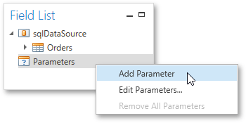
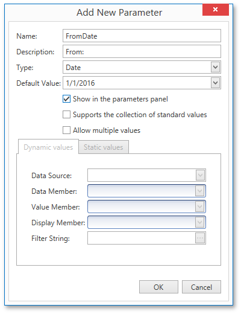
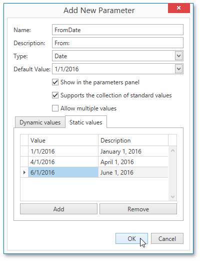
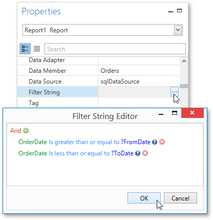
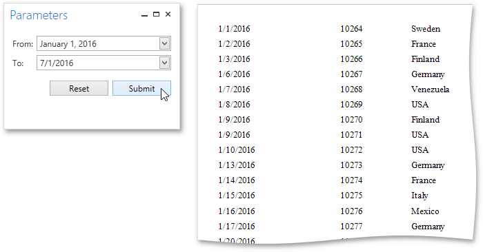

Parametrized Report
This tutorial describes the steps needed to create a report with parameters. In this example, two date-time parameters are created to filter out orders that don't fall in the specified range from the report.
To create report parameters, follow the steps below.
- Create a new report and bind it to a data source.
In the Field List panel, right-click the Parameters section and in the invoked menu, click Add Parameter.

In the invoked Add New Parameter dialog, set the created parameter's Name and Description properties and make sure to set its Type to an appropriate value. To display this parameter in the Print Preview, enable the Show in the parameters panel option.

To assign a list of values to this report parameter, enable the Supports the collection of standard values option.
In the Dynamic values tab, you can specify a parameter's data source, data member, value member and display member. The value member defines a data field that provides values to the parameter. The display member defines a data field that provides display names for parameter values, i.e., how these values appear in the user interface available in a Print Preview.
In the Static values tab, you can manually fill the list of parameter values. Each parameter value has an individual description specifying how this value appears in the Parameters Panel.

- Then, repeat the previous steps to create the second parameter, so that every time your report is previewed, you will be asked to specify two dates.
Next, use parameters to filter your report's data. Select report, and in the Properties Panel, click the ellipsis button for the Filter String property. Then, in the invoked Filter String Editor, construct an expression where a data field is compared with the created parameters. To access parameters, click the icon on the right until it turns into a question mark.

The Parametrized report is now ready. Switch to the Print Preview tab, define the required values in the Parameters panel and click Submit.
